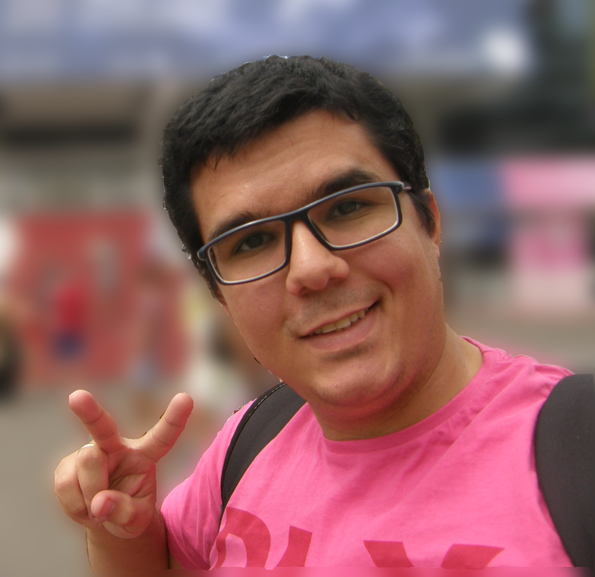

Welcome!
This website is a short presentation of my experiences involving Computing, Games and Education.Who I am
 Master's degree student in Video Games development (Master 2 - Gamagora - Univ Lyon 2).Next Objective
With the aim of developing the skills acquired during the formation in the video game subjects, I am currently searching for an internship during the period of May-September 2018.Formation
Bachelor in Computer Science (UFRN - Brazil/2015)